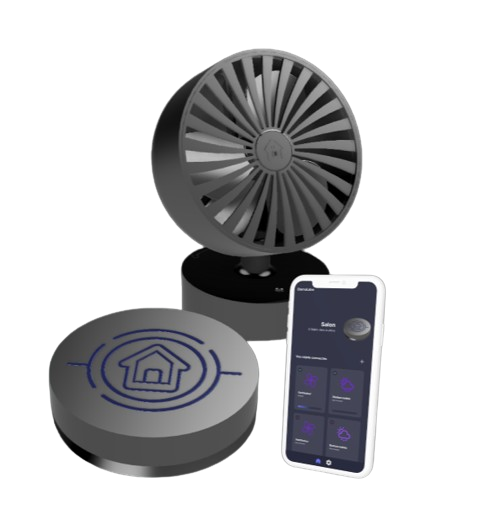
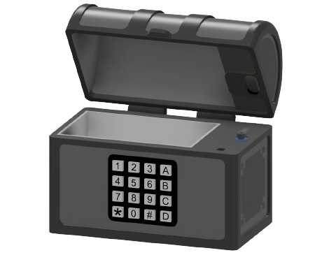
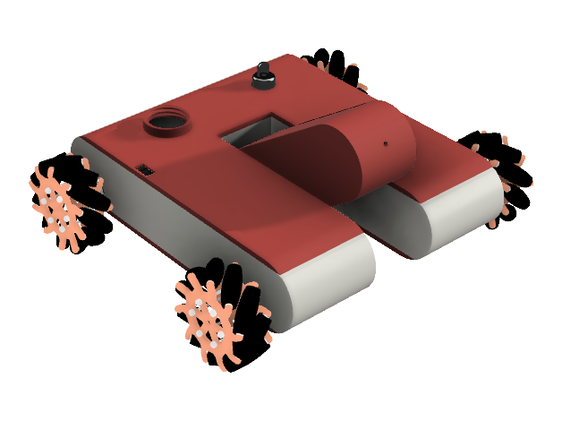
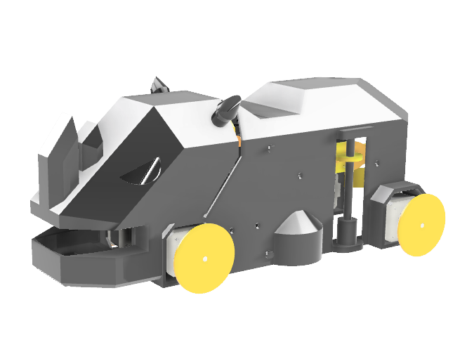

Le projet DomoLabo est une initiative ambitieuse visant à créer un système domotique complet et accessible à partir de technologies open source. Dirigé par une équipe comprenant Manon ARCAS, Léo MACE, Killian Guillemot, Mattéo Verdez et moi-même, le projet se concentre sur la conception d'objets connectés, un hub central de gestion, et une application mobile pour contrôler le système.
Les fondations reposent sur l'utilisation de Bluetooth Low Energy et MQTT pour assurer une connectivité fiable et flexible. Ce projet nous a permis de développer nos compétences techniques tout en explorant des technologies innovantes pour rendre la maison intelligente accessible, intuitive et personnalisable pour tous.
Coffre connecté

Création d'un coffre sécurisé permettant plusieurs méthodes d'authentification pour l'ouverture. Destiné au stockage sécurisé d'objets de valeur tels que bijoux, documents et argent.Intégration d'un capteur RFID, d'un pavé numérique, de signaux sonores et lumineux, ainsi que d'un servo-moteur pour l'ouverture du coffre. Conception 3D et impression du modèle, avec utilisation de KiCad pour les schémas électriques et la gestion des composants.

Ce prototype de robot pompier a été développé lors d'un hackathon. Il est équipé de roues Mecanum permettant un déplacement omnidirectionnel sur 6 axes, ainsi que d'un canon à eau. Les accessoires sont démontables pour une plus grande modularité. Le robot utilise une carte ESP32 et est programmé en MicroPython. La communication entre les cartes se fait via le protocole ESP-NOW.

Le projet des Robolympiades, organisé par nous, les étudiants du Yday, a consisté en une compétition de robotique mobile avec quatre épreuves distinctes, incluant le contrôle via une interface web. Nous avons conçu et programmé de petits robots pour s'affronter dans des défis variés. L'événement a captivé un public composé notamment d'enfants, qui ont eu l'occasion de participer à des jeux interactifs avec les robots. Nous avons pu démontrer notre créativité, ingéniosité et compétences techniques, tout en partageant notre savoir et nos expériences avec les participants.